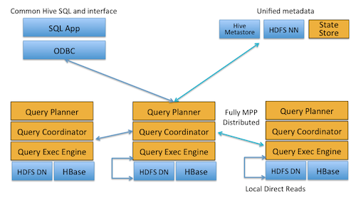

Cloudera Impala: Real-Time Queries in Apache Hadoop, For Real
http://blog.cloudera.com/blog/2012/10/cloudera-impala-real-time-queries-in-apache-hadoop-for-real/
- With Impala, you can query data, whether stored in HDFS or Apache HBase – including SELECT, JOIN, and aggregate functions – in real time. (数据存储在HDFS以及HBase）
- Furthermore, it uses the same metadata, SQL syntax (Hive SQL), ODBC driver and user interface (Hue Beeswax) as Apache Hive, providing a familiar and unified platform for batch-oriented or real-time queries. (For that reason, Hive users can utilize Impala with little setup overhead.) （使用了和Hive相同的metadata，SQL语法以及ODBC driver以及user interface，这样就为real-time以及batch query提供了统一的平台，对于Hive用户来说学习代价非常小）
- The first beta drop includes support for text files and SequenceFiles; SequenceFiles can be compressed as Snappy, GZIP, and BZIP (with Snappy recommended for maximum performance). Support for additional formats including Avro, RCFile, LZO text files, and Doug Cutting’s Trevni columnar format is planned for the production drop.（beta版本支持在HDFS上面存储text以及sequenceFile，SF可以使用snappy，gzip以及bzip压缩。产品级别释出的时候会支持一些其他的格式比如Avro，RCFile，LZO txt以及Doug Cutting编写的Trevni的列式存储格式）
- To avoid latency, Impala circumvents MapReduce to directly access the data through a specialized distributed query engine that is very similar to those found in commercial parallel RDBMSs.（为了缩短延迟，impala绕过mr，通过类似商业并行的RDBMS的分布式查询引擎来访问数据）
- Unlike Dremel as described in the 2010 paper, which could only handle single-table queries, Impala already supports the full set of join operators that are one of the factors that make SQL so popular.（dremel只是支持在一个table上面的query，而impala可以支持SQL里面所有的join操作）
